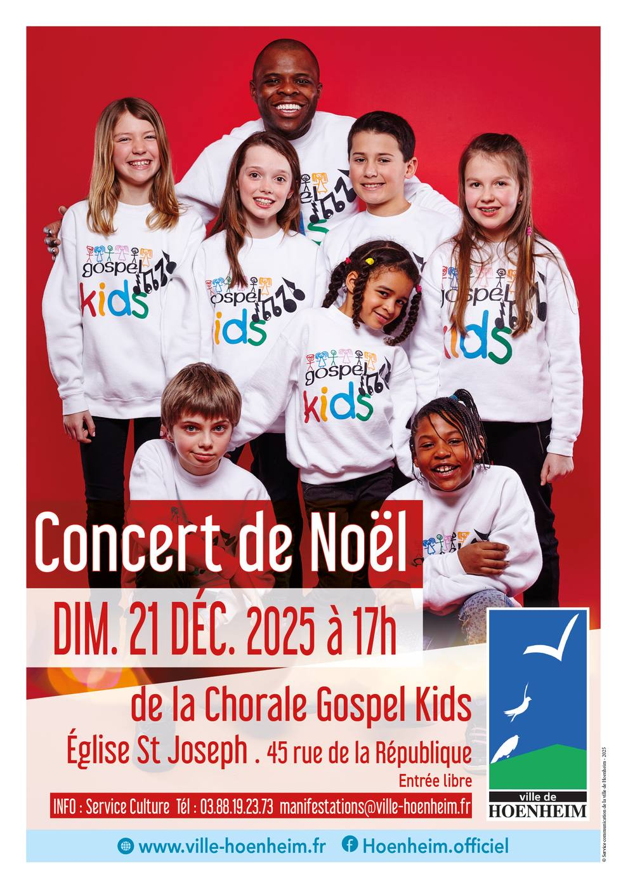

- Cet événement est terminé
Concert de Noël des Gospel Kids
21 décembre 2025 à 17 h 00 min - 19 h 00 min
Navigation de l'événement

Vivez un moment magique et plein d’émotion avec les Gospel Kids !
Rendez-vous dimanche 21 décembre 2025 à 17h à l’église Saint-Joseph de Hoenheim pour un concert de Noël vibrant, mêlant énergie, joie et ferveur.
Le célèbre chœur d’enfants fera résonner les plus beaux chants de Noël et des titres gospel remplis d’espérance.
Venez nombreux partager la magie de Noël !
Venez découvrir ce concert de Noël à Hoenheim dimanche 21 décembre 2025 à 17h à l’église St Joseph, 45 Rue de la République. Entrée libre.
Infos auprès du service Animation de la Ville : 03 88 19 23 73 ou manifestations@ville-hoenheim.fr